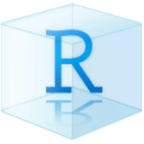
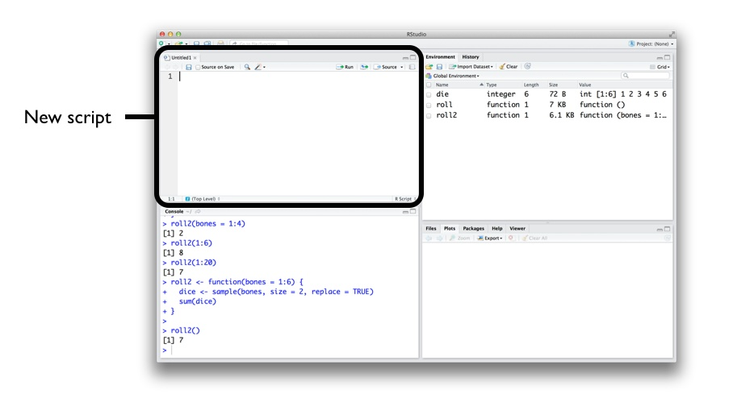
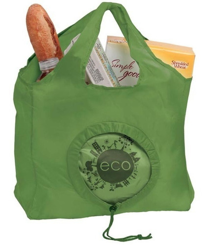
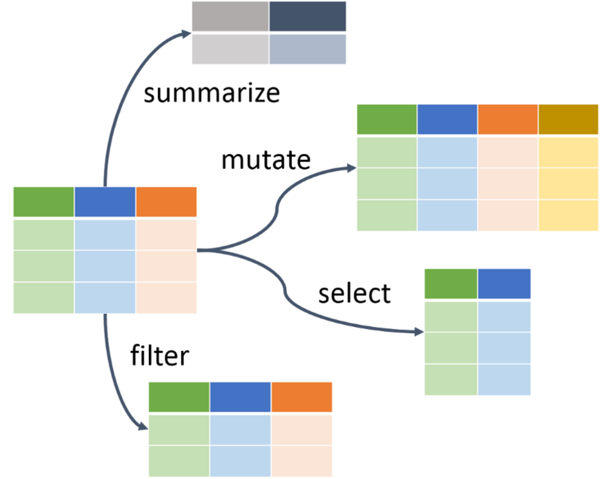

Sintam-se à vontade para me interromper e tirar dúvidas
1. Linguagem R
Definição
O R é uma linguagem de programação livre (open source), direcionada à manipulação, análise e visualização de dados, com diversas expansões (pacotes) para o uso de dados com formatos específicos
Aplicações
Manipulação, visualização e análise de dados
Estatísticas univariadas e multivariadas
Análises de dados ecológicos
Análise de dados espaciais, temporais e sonoros
Análise de dados funcionais, genéticos e filogenéticos
Análise de dados geoespaciais e sensoriamento remoto
Visualização de todos os tipos de dados anteriores
R Markdown e quarto
Textos em HTML, PDF, Word, ODT, Markdown
Slides, Websites, Blogs, Livros e Artigos
Shiny
RStudio
IDE: Ambiente de Desenvolvimento Integrado (Integrated Development Environment)
IDE
Ambiente de Desenvolvimento Integrado (Integrated Development Environment)
Interface
Janelas e abas
1. Editor/Script: é onde escrevemos nossos códigos em R ou R Markdown 2. Console: é onde os códigos são rodados e vemos as saídas 3. Environment: painel com todos os objetos criados na sessão 3. History: painel com o histórico dos códigos rodados 3. Connection: painel para conectar banco de dados 3. Git: painel do controle de versão 3. Tutorial: painel de tutoriais 4. Files: painel que mostra os arquivos no diretório de trabalho 4. Plots: painel onde os gráficos são apresentados 4. Packages: painel que lista os pacotes 4. Help: painel onde a documentação das funções é exibida 4. Viewer: painel de visualização
Projeto R (.Rproj)
Facilita o trabalho em múltiplos ambientes
Cada projeto possui seu diretório, documentos e workspace
Permite controle de versão (git e GitHub)

Conferindo os computadores
Console
O console é onde a linguagem R instalada é carregada para executar os códigos
Console
Na janela do console aparece o símbolo >, seguido de uma barra vertical | que fica piscando (cursor), onde digitamos ou enviamos nossos códigos do script
Vamos digitar 10 + 2 e apertar a tecla Enter para que essa operação seja executada
O resultado retorna o valor 12, precedido do valor um entre colchetes [1]
10+2
Console
Os colchetes [] demonstram a posição do elemento numa sequência de valores
Vamos criar uma sequência usando o operador : para demonstrar isso
O número que aparecer nos colchetes vai depender da largura das janelas
1:42
Script
Onde os códigos são escritos e salvos no formato .R
Atalho: ctrl + shift + N

Script
Os códigos devem ser digitados preferencialmente no script
Para executar um código, deixem o cursor em qualquer lugar da linha
Atalho: ctrl + enter
1
1+2
Script
Comentários (#)
Comentários não são lidos pelo R e descrevem informações em nosso script
São representados pelo # (hash) ou #' (hash-linha)
# comentarios# o r nao le o codigo depois do # (hash)42# essas palavras nao sao executadas, apenas o 42
Script
Comentários (#)
Sempre comece um script com um cabeçalho
Ajuda a lembrar o que o script faz e quando foi escrito
#' -#' titulo: Linguagem R para análise de dados#' autor: seu nome#' data: 10-11-2022#' -
Operadores
Operadores aritméticos (Números)
Operador
Descrição
Uso
+
Adição
a + b
–
Subtração
a - b
*
Multiplicação
a * b
/
Divisão
a / b
%%
Resto da divisão
a %% b
%/%
Quociente da divisão
a %/% b
^
Potenciação
a^b
Operadores
Operadores relacionais (TRUE|FALSE)
Operador | Descrição | Uso |
|:–:|::|:-:| | < | Menor | a < b | | > | Maior | a > b | | == | Igual | a == b | | <= | Menor ou igual | a <= b | | >= | Maior ou igual | a > = b | | != | Não igual (diferente) | a!=b |
Operadores
Ordem das operações aritméticas
() > ^ > * ou / > + ou -
# sem especificar - segue a ordem das operações1*2+2/2^2
# especificando - segue a ordem dos parênteses((1*2) + (2/2)) ^2
Objetos
Palavras que atribuímos (guardamos) dados possibilitando sua manipulação
Atribuição (<-)
palavra <- dados
Atalho: alt + -

Objetos
Vamos atribuir o valor 10 à palavra eco
# atribuicao - simbolo (<-)eco <-10
Objetos
Sempre confira a atribuição
Dica: chame o objeto novamente
# atribuicao - simbolo (<-)eco <-10eco
Objetos
Seja criativo
O R sobrescreve os valores dos objetos com o mesmo nome
# eco vale 10eco <-10eco
# agora eco vale 2eco <-2eco
Objetos
Seja criativo, mas nem tanto…
O R tem limitações ao nomear objetos!
Começar por letras (a-z ou A-Z) ou pontos (.)
Conter letras (a-z ou A-Z), números (0-9), underscores (_) ou pontos (.)
Case-sensitive, i.e., ele difere letras maiúsculas de minúsculas
Evitar utilizar letras maiúsculas, acentos ou cedilha (ç)
Não podem ser iguais a nomes especiais: break, else, FALSE, for, function, if, Inf, NA, NaN, next, repeat, return, TRUE, while
# remover linhas com napenguins_raw_todas_na <- tidyr::drop_na(data = penguins_raw)head(penguins_raw_todas_na)
drop_na
Remove linhas com NA de uma única coluna
# remover linhas com na de uma colunapenguins_raw_colunas_na <- tidyr::drop_na(data = penguins_raw,any_of("Comments"))head(penguins_raw_colunas_na[, "Comments"])
Descrição
Funções que facilitam a manipulação de dados

Funções
Gramática simples que contém funções verbais para a manipulação de dados
Verbos: mutate(), select(), filter(), arrange(), summarise(), slice(), rename(), etc.
Replicação: across(), if_any(), if_all(), where(), starts_with(), ends_with(), contains(), etc.
Agrupamento: group_by() e ungroup()
Junções: inner_join(), full_join(), left_join(), right_join(), etc.
Combinações: bind_rows() e bind_cols()
Resumos, contagem e seleção: n(), n_distinct(), first(), last(), nth(), etc.
Funções
Colunas
relocate(): muda a ordem das colunas rename(): muda o nome das colunas select(): seleciona colunas pelo nome ou posição pull(): seleciona uma coluna como vetor mutate(): adiciona novas colunas ou resultados em colunas existentes
Linhas
arrange(): reordena as linhas com base nos valores de colunas filter(): seleciona linhas com base em valores de colunas slice(): seleciona linhas de diferente formas distinct(): remove linhas com valores repetidos com base nos valores de colunas
Agrupamento
count(): conta observações para uma ou mais coluna group_by(): agrupa linhas pelos valores das colunas summarise(): resume os dados através de funções considerando valores das colunas
Sintaxe
O tibble é sempre o primeiro argumento das funções verbais
Todas seguem a mesma sintaxe:
tibble
operador pipe
nome da função verbal com os argumentos entre parênteses
As funções verbais não modificam o tibble original
Reordena linhas de forma crescente pelos valores de uma coluna
# reordenar os valores por ordem crescentepenguins_arrange <- penguins %>% dplyr::arrange(body_mass_g)head(penguins_arrange)
arrange
Reordena linhas de forma decrescente pelos valores de uma coluna
# reordenar os valores por ordem decrescentepenguins_arrange_desc <- penguins %>% dplyr::arrange(desc(body_mass_g))head(penguins_arrange_desc)
arrange
Reordena linhas de forma decrescente pelos valores de uma coluna
# reordenar os valores por ordem decrescentepenguins_arrange_desc_m <- penguins %>% dplyr::arrange(-body_mass_g)head(penguins_arrange_desc_m)
filter
Filtra linhas por valores de uma coluna
# filtrar linhas por valores de uma colunapenguins_filter <- penguins %>% dplyr::filter(species =="Adelie")head(penguins_filter)
filter
Filtra linhas por valores de várias colunas
# filtrar linhas por valores de duas colunaspenguins_filter_two <- penguins %>% dplyr::filter(species =="Adelie"& sex =="female")head(penguins_filter_two)
filter
Filtra linhas por vários valores de várias colunas
# filtrar linhas por mais de um valor e mais de uma colunapenguins_filter_in <- penguins %>% dplyr::filter(species %in%c("Adelie", "Gentoo"), sex =="female")head(penguins_filter_in)
slice
Seleciona linhas por intervalos, indicando quais linhas desejamos